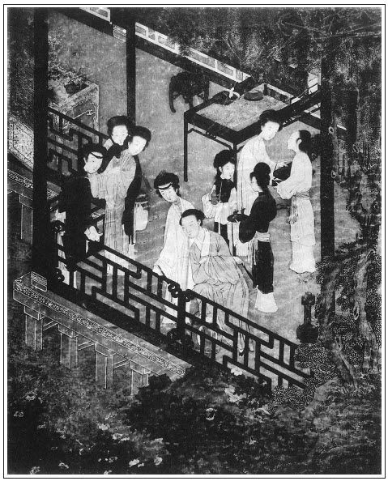

張回此回收拾武松，是一段過接文字。
妻妾玩賞，固是將上文諸事諸人一鎖，然卻又早過到瓶兒處也。文字如行雲冉冉，流水潺潺，無一沾滯死住，方是絕世妙文。
止是出瓶兒，妙矣。不知作者又瞞了看官也。蓋他是順手要出春梅，卻恐平平無生動趣，乃又借瓶兒處繡春一影，下又借迎春一影，使春梅得寵一事，便如水光鏡影，絕非人意想中，而又最入情理。且瓶兒處不致寂寞。西門步步留心，垂涎已久，而金蓮得寵，惹嘲生事，與氣驕志放，以致私僕，一筆中將諸事皆盡，而又層層深意，能使芙蓉亭一會，如梁山之小合泊。金、瓶、梅三人，一現在，一旁侍，一趁來，俱會一處，儼然六房婢妾全勝之時也。天下事固由漸而起，而文，字亦由漸而入，此蓋漸字中一大結果也。
講瓶兒出身，妙在順將伯爵等一映，使前後文字皆動，不寂寞一邊。文字中，真是公孫舞劍，無一空處。而穿插之妙，又如鳳入牡丹，一片文錦，其枝枝葉葉，皆脈脈相通，卻又一絲不亂。而看者乃又五色迷離，不能為之分何者是鳳，何者是牡丹，何者是枝是葉也。
詞曰：
八月中秋，涼飆微逗，芙蓉卻是花時候。誰家姊妹斗新妝，園林散步攜手。
折得花枝，寶瓶隨後，歸來玩賞全憑酒。三杯酩酊破愁城，醒時愁緒應還又。張旁上半闋收拾金蓮文字；下半闋為瓶兒插筍也。
──右調《踏莎行》

話說武二被地方保甲拿去縣裡見知縣，不題。且表西門慶跳下樓窗，扒伏在人家院裡藏了。原來是行醫的胡老人家。張夾百忙裡又出胡老人。只見他家使的一個大胖丫頭，走來毛廁裡淨手，蹶著大屁股，猛可見一個漢子扒伏在院牆下，往前走不迭，大叫：「有賊了！」繡眉劈空點綴，令人絕倒。慌的胡老人急進來。看見，認得是西門慶，便道：「大官人，且喜武二尋你不著，把那人打死了。地方拿他縣中見官去了。這一去定是死罪。大官人歸家去，料無事矣。」西門慶拜謝了胡老人，搖擺來家，一五一十對潘金蓮說，二人拍手喜笑，以為除了患害。繡眉世事往往如此。婦人叫西門慶上下多使些錢，務要結果了他，休要放他出來。西門慶一面差心腹家人來旺兒，饋送了知縣一副金銀酒器、五十兩銀子，上下吏典也使了許多錢，只要休輕勘了武二。
知縣受了賄賂，到次日昇廳。地方押著武松並酒保、唱的一班人，當廳跪下。縣主翻了臉，便叫：「武松！你這廝昨日誣告平人，我已再三寬你，如何不遵法度，今又平白打死人？」武松道：「小人本與西門慶有仇，尋他廝打，不料撞遇此人。他隱匿西門慶不說，小人一時怒起，誤將他打死。只望相公與小人做主，拿西門慶正法，與小人哥哥報這一段冤仇。小人情願償此人誤傷之罪。」知縣道：「這廝胡說，你豈不認得他是縣中皂隸！今打殺他，定別有緣故，為何又纏到西門慶身上？不打如何肯招！」喝令左右加刑。兩邊內三四個皂隸，把武松拖翻，雨點般打了二十。打得武二口口聲冤道：「小人也有與相公效勞用力之處，相公豈不憐憫？相公休要苦刑小人！」知縣聽了此言，越發惱了，道：「你這廝親手打死了人，尚還口強，抵賴那個？」喝令：「好生與我拶起來！」當下又拶了武松一拶，敲了五十杖子，教取面長枷帶了，收在監內。一干人寄監在門房裡。內中縣丞、佐二官也有和武二好的，念他是個義烈漢子，有心要周旋他，爭奈都受了西門慶賄賂，粘住了口，做不的主張。又見武松只是聲冤，延挨了幾日，只得朦朧取了供招，喚當該吏典並仵作、鄰里人等，押到獅子街，檢驗李外傳身屍，填寫屍單格目。委的被武松尋問他索討分錢不均，酒醉怒起，一時鬥毆，拳打腳踢，撞跌身死。左肋、面門、心坎、腎囊，俱有青赤傷痕不等。檢驗明白，回到縣中。一日，做了文書申詳，解送東平府來，詳允發落。
這東平府尹，姓陳雙名文昭，乃河南人氏，極是個清廉的官，聽的報來，隨即升廳。但見他：
平生正直，秉性賢明。幼年向雪案攻書，長大在金鑾對策。常懷忠孝之心，每發仁慈之政。戶口登，錢糧辦，黎民稱頌滿街衢；詞頌減，盜賊休，父老讚歌喧市井。
正是：
名標青史播千年，聲振黃堂傳萬古。
賢良方正號青天，正直清廉民父母。
這府尹陳文昭升了廳，便教押過這干犯人，就當廳先把清河縣申文看了，又把各人供狀招擬看過，端的上面怎生寫著？文曰：
東平府清河縣，為人命事呈稱：犯人武松，年二十八歲，系陽谷縣人氏。因有膂力，本縣參做都頭。因公差回還，祭奠亡兄，見嫂潘氏不守孝滿，擅自嫁人。是日，松在巷口緝聽，不合在獅子街上王鸞酒樓上撞遇李外傳。因酒醉，索討前借錢三百文，繡眉招卷之不得情實，古今如此。外傳不與；又不合因而鬥毆，相互不服，揪打踢撞傷重，當時身死。比有唱婦牛氏、包氏見證，致被地方保甲捉獲。委官前至屍所，拘集仵作、裡甲人等，檢驗明白，取供具結，填圖解繳前來，覆審無異。擬武松合依鬥毆殺人，不問手足、他物、金兩，律絞。酒保王鸞並牛氏、包氏，俱供明無罪。今合行申到案發落，請允施行。
政和三年八月 日
知縣李達天、縣丞樂和安、主簿華荷祿、典史夏恭基、司吏錢勞。
府尹看了一遍，將武松叫過面前，問道：「你如何打死這李外傳？」那武松只是朝上磕頭告道：「青天老爺！小的到案下，得見天日。容小的說，小的敢說。」府尹道：「你只顧說來。」武松遂將西門慶奸娶潘氏，並哥哥捉姦，踢中心窩，後來縣中告狀不准，前後情節細說一遍，道：「小的本為哥哥報仇，因尋西門慶廝打，不料誤打死此人。委是小的負屈含冤，奈西門慶錢大，禁他不得。小人死不足惜，但只是小人哥哥武大含冤地下，枉了性命。」府尹道：「你不消多言，我已盡知了。」因把司吏錢勞叫來，痛責二十板，說道：「你那知縣也不待做官，何故這等任情賣法？」於是將一干人眾，一一審錄過，用筆將武松供招都改了，因向佐二官說道：「此人為兄報仇，誤打死這李外傳，也是個有義的烈漢，比故殺平人不同。」一面打開他長枷，換了一面輕罪枷枷了，下在牢裡。一干人等都發回本縣聽候。一面行文書著落清河縣，添提豪惡西門慶，並嫂潘氏、王婆、小廝鄆哥、仵作何九，一同從公根勘明白，奏請施行。武松在東平府監中，人都知道他是條好漢，因此押牢禁子都不要他一文錢，到把酒食與他吃。
早有人把這件事報到清河縣。西門慶知道了，慌了手腳。陳文昭是個清廉官，不敢來打點他。只得走去央求親家陳宅心腹，並使家人來旺繡旁伏。星夜往東京下書與楊提督。提督轉央內閣蔡太師。太師又恐怕傷了李知縣名節，張夾蔡太師一現。連忙繼了一封密書，特來東平府下與陳文昭，免提西門慶、潘氏。這陳文昭原系大理寺寺正，升東平府府尹，又系蔡太師門生，又見楊提督乃是朝廷面前說得話的官，以此人情兩盡，只把武松免死，問了個脊杖四十，刺配二千里充軍。況武大已死，屍傷無存，事涉疑似，勿論。其餘一干人犯釋放寧家。申詳過省院，文書到日，即便施行。陳文昭從牢中取出武松來，當堂讀了朝廷明降，開了長枷，免不得脊杖四十，取一具七斤半鐵葉團頭枷釘了，臉上刺了兩行金字，迭配孟州牢城。其餘發落已完，當堂府尹押行公文，差兩個防送公人，領了武鬆解赴孟州交割。
當日武松與兩個公人出離東平府，來到本縣家中，將家活多變賣了，打發那兩個公人路上盤費，央托左鄰姚二郎看管迎兒：「倘遇朝廷恩典，赦放還家，恩有重報，不敢有忘。」街坊鄰舍，上戶人家，見武二是個有義的漢子，不幸遭此，都資助他銀兩，也有送酒食錢米的。武二到下處，問土兵要出行李包裹來，即日離了清河縣上路，迤邐往孟州大道而行。有詩為證：
府尹推詳秉至公，武松垂死又疏通。
今朝刺配牢城去，病草萋萋遇暖風。
這裡武二往孟州充配去了，不題。且說西門慶打聽他上路去了，一塊石頭方落地，心中如去了痞一般，十分自在。於是家中吩咐家人來旺、來保、來興兒，收拾打掃後花園芙蓉亭乾淨，鋪設圍屏，掛起錦障，安排酒席齊整，叫了一起樂人，吹彈歌舞。請大娘子吳月娘、第二李嬌兒、第三孟玉樓、第四孫雪娥、第五潘金蓮，張眉一總處繳金蓮，卻是接瓶兒。閤家歡喜飲酒。家人媳婦、丫鬟使女張夾四字單謂春梅。兩邊侍奉。但見：
香焚寶鼎，花插金瓶。器列象州之古玩，簾開合浦之明珠。水晶盤內，高堆火棗交梨；碧玉杯中，滿泛瓊漿玉液。烹龍肝，炮鳳腑，果然下箸了萬錢；黑熊掌，紫駝蹄，酒後獻來香滿座。碾破鳳團，白玉甌中分白浪；斟來瓊液，紫金壺內噴清香。畢竟壓賽孟嘗君，只此敢欺石崇富。
當下西門慶與吳月娘居上，其餘多兩旁列坐，傳杯弄盞，花簇錦攢。飲酒間，只見小廝玳安張旁必用玳安。領下一個小廝、一個小女兒，才頭髮齊眉，生得乖覺，拿著兩個盒兒，說道：「隔壁花家，送花兒來與娘們戴。」走到西門慶、月娘眾人跟前，都磕了頭，立在旁邊，說：「俺娘使我送這盒兒點心並花兒與西門大娘戴。」張夾才完金蓮，便是瓶兒合筍。所謂寶瓶隨後兒。揭開盒兒看，一盒是朝廷上用的果餡椒鹽金餅，一盒是新摘下來鮮玉簪花。張夾金蓮的角兒，卻步步寒酸。瓶兒自是富麗。月娘滿心歡喜，說道：「又叫你娘費心。」一面看菜兒，打發兩個吃了點心。月娘與了那小丫頭一方汗巾兒，與了小廝一百文錢，說道：「多上覆你娘，多謝了。」因問小丫頭兒：「你叫什麼名字？」他回言道：「我叫繡春。小廝便是天福兒。」打發去了。月娘便向西門慶道：「咱這花家娘子兒，倒且是好，常時使小廝丫頭送東西與我們。我並不曾回些禮兒與他。」西門慶道：「花二哥娶了這娘子兒，今不上二年光景。他自說娘子好個性兒。不然房裡怎生得這兩個好丫頭。」繡旁字字綿裡裹針。繡眉似為李瓶兒出筍，卻又暗伏收春梅，機緣線索之妙，令人不測。張夾即入春梅，捷甚。月娘道：「前者他家老公公死了出殯時，我在山頭會他一面。生得五短身材，團面皮，細灣灣兩道眉兒，且是白淨，好個溫克性兒。年紀還小哩，不上二十四五。」西門慶道：「你不知，他原是大名府梁中書妾，晚嫁花家子虛，帶一分好錢來。」張夾敘述處，垂涎已久。月娘道：「他送盒兒來，咱休差了禮數，到明日也送些禮物回答他。」
看官聽說：原來花子虛渾家姓李，因正月十五所生，那日人家送了一對魚瓶兒來，就小字喚做瓶姐。先與大名府梁中書為妾。梁中書乃東京蔡太師女婿，夫人性甚嫉妒，婢妾打死者多埋在後花園中。這李氏只在外邊書房內住，有養娘伏侍。只因政和三年正月上元之夜，梁中書同夫人在翠雲樓上，李逵殺了全家老小，繡旁照應梁中書與夫人各自逃生。這李氏帶了一百顆西洋大珠，繡旁伏。二兩重一對鴉青寶石，與養娘走上東京投親。那時花太監由御前班直升廣南鎮守，因侄男花子虛沒妻室，就使媒婆說親，娶為正室。太監到廣南去，也帶他到廣南，住了半年有餘。不幸花太監有病，告老在家，因是清河縣人，在本縣住了。如今花太監死了，一分錢多在子虛手裡。
每日同朋友在院中行走，與西門慶都是前日結拜的弟兄。終日與應伯爵、謝希大一班十數個，每月會在一處，叫些唱的，花攢錦簇頑耍。眾人又見花子虛乃是內臣家勤兒，手裡使錢撒漫，哄著他在院中請婊子，整三五夜不歸。正是：張夾為子虛為事張本。
紫陌春光好，紅樓醉管弦。
人生能有幾？不樂是徒然。
此事表過不題。且說當日西門慶率同妻妾，閤家歡樂，在芙蓉亭上飲酒，至晚方散。歸來潘金蓮房中，已有半酣，乘著酒興，要和婦人雲雨。婦人連忙熏香打鋪，和他解衣上床。西門慶且不與他雲雨，明知婦人第一好品簫，於是坐在青紗帳內，令婦人馬爬在身邊，雙手輕籠金釧，捧定那話，往口裡吞放。西門慶垂首玩其出入之妙，鳴咂良久，淫情倍增，因呼春梅進來遞茶。繡旁未必無心。婦人恐怕丫頭看見，連忙放下帳子來。西門慶道：「怕怎麼的？」因說起：「隔壁花二哥房裡到有兩個好丫頭，今日送花來的是小丫頭。還有一個也有春梅年紀，也是花二哥收用過了。但見他娘在門首站立，繡旁不丟開，寫出貪心。他跟出來，卻是生得好模樣兒。誰知這花二哥年紀小小的，房裡恁般用人！」繡眉牽枝扯葉，語語含，卻語語露，何物文人，摹寫至此。婦人聽了，瞅了他一眼，說道：「怪行貨子，我不好罵你，你心裡要收這個丫頭，繡旁解心人。收他便了，如何遠打周折，指山說磨，拿人家來比奴。奴不是那樣人，他又不是我的丫頭！既然如此，明日我往後邊坐一回，騰個空兒，你自在房中叫他來，收他便了。」繡眉金蓮亦有心抬舉春梅，故一說便肯。張眉本為春梅定情卻能使瓶兒情事活跳。一筆作無數筆用。不知是借瓶兒出春梅，不知是寫春梅映瓶兒：妙絕。西門慶聽了，歡喜道：「我的兒，你會這般解趣，怎教我不愛你！」二人說得情投意洽，更覺美愛無加，慢慢的品簫過了，方才抱頭交股而寢。
正是：
自有內事迎郎意，慇勤快把紫簫吹。
有《西江月》為證：
紗帳香飄蘭麝，娥眉慣把簫吹。雪瑩玉體透房幃，禁不住魂飛魄碎。
玉腕款籠金釧，兩情如醉如癡。才郎情動囑奴知，慢慢多咂一會。
到次日，果然婦人往孟玉樓房中坐了。西門慶叫春梅到房中，收用了這妮子。正是：
春點杏桃紅綻蕊，風欺楊柳綠翻腰。
潘金蓮自此一力抬舉他起來，不令他上鍋抹灶，只叫他在房中鋪床疊被，遞茶水，衣服首飾揀心愛的與他，纏得兩隻腳小小的。原來春梅比秋菊不同，性聰慧，喜謔浪，善應對，生的有幾分顏色，西門慶甚是寵他。張夾雪娥不知也。秋菊為人濁蠢，不諳事體，婦人常常打的是他。正是：
燕雀池塘語話喧，蜂柔蝶嫩總堪憐。
雖然異數同飛鳥，貴賤高低不一般。
文回文禹門云：潘金蓮入門矣，春梅入室矣，李瓶兒隔牆消息已動矣。武松已去，正西門慶得志時也。作者至此，振筆直書，閱者自此，縱目流覽。曾亦思：孟玉樓是誑來的，潘金蓮是劫來的，李瓶兒又是奪來的。時勢如此，尚何言乎？天道如斯，尚可問乎？
今之世上，果有西門慶乎？而吾未見其人也。今世竟無西門慶乎？而吾曾聞其事也。西門慶故無如我何，我又奈西門慶何哉！西門慶縱奈我何，我又將西門慶若何哉！於是，有痛恨西門慶者，吾謂不必恨也，有羨慕西門慶者，吾謂不必羨也。恨之者不願為西門慶，羨之者亦不能作西門慶。諺語有云：閒將冷眼觀螃蟹，看爾橫行到幾時？
按：此評寫於光緒五年（1879）五月十一日於南陵縣署。